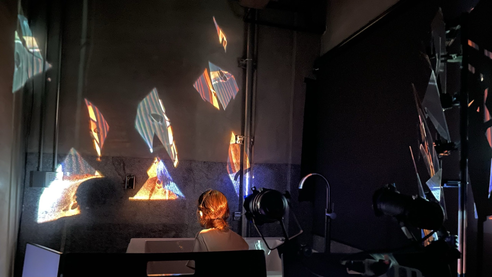
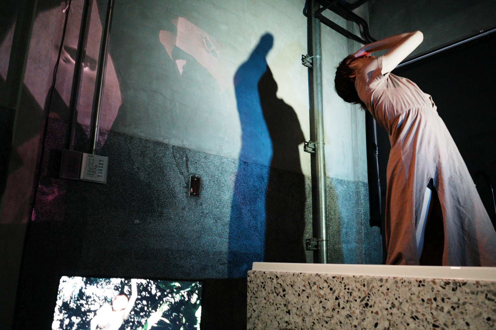
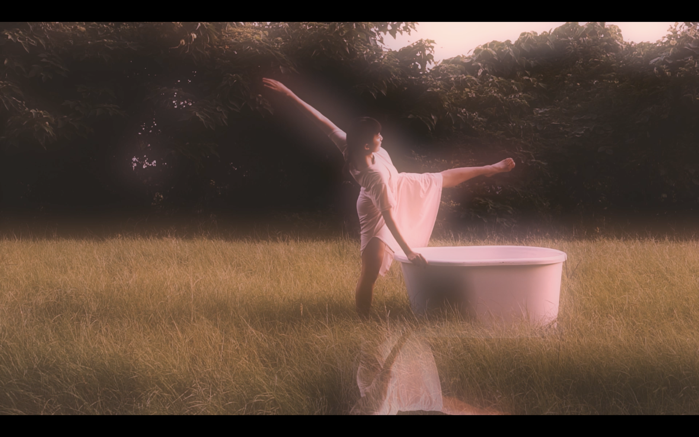
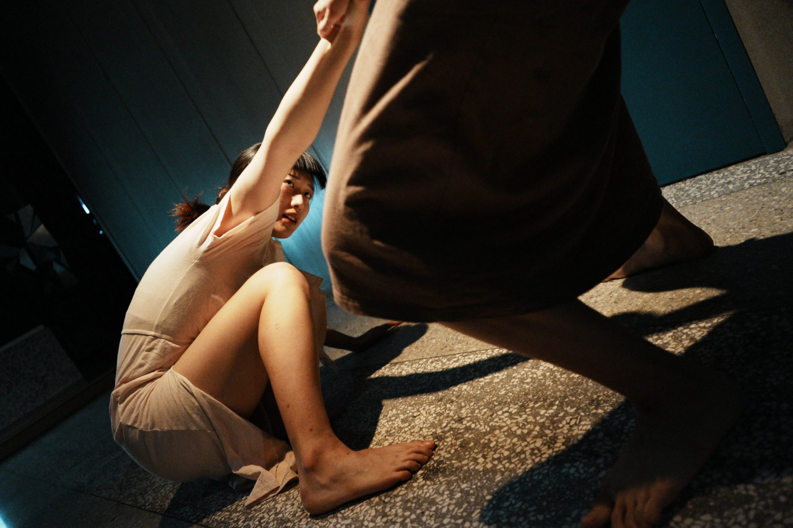
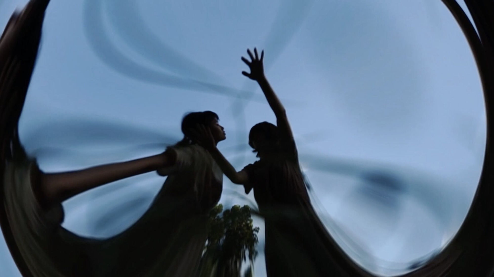
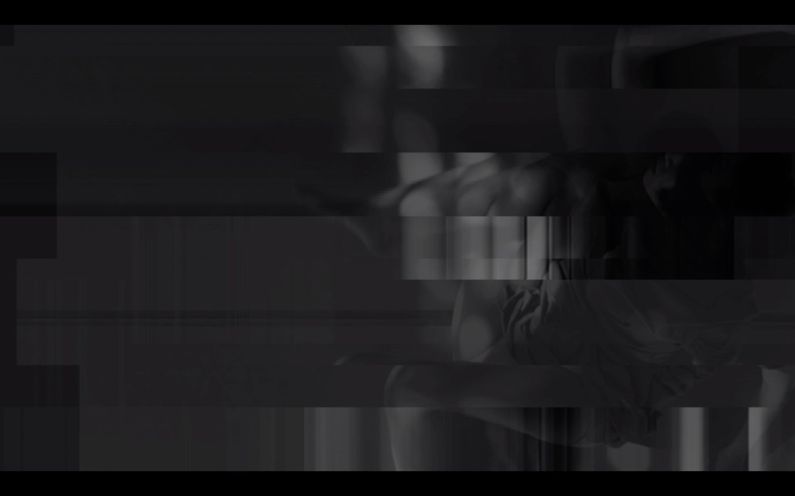

09 — 2022 — Experimental theatre · media × dance
The Far End
無盡深邃的那端
舞蹈演出中的鏡面與即時投影。Mirrors and live projection for a dance piece.






01
鏡面裝置接住即時投影，再碎成片段反射回去。舞者和自己的殘影互動、模仿，最後被它取代；液晶螢幕上同時進行另一條故事線。
A mirror installation catches the live projection and reflects it back in pieces. The dancer plays against her own afterimage, imitates it and is finally replaced by it, while LCD screens carry a second storyline.
02
故事跟著一個被謠言包圍的人，看社群上的片段資訊怎麼拼出一個不太像本人的形象，以及當事人在這種壓力下的自我懷疑。
The story follows someone surrounded by rumour: how scraps of information on social media add up to a version of a person that is not quite them, and the self-doubt that follows.
- Medium
- Projection, mirror installation, video, dance, sound and light · ~66 m² black box
- With
- TNUA New Media Art × TNUA Dance
- Role
- Video design, installation, stage arrangement
- Shown
- 2022 Taipei Fringe Festival, Nao Space 4F
- Video
- Concept and production of Act I and Act IV video
- Installation
- Mirror structure and projection mapping
- Stage
- Blocking and spatial arrangement
- Venue
- Nao Space, Taipei Fringe Festival 2022